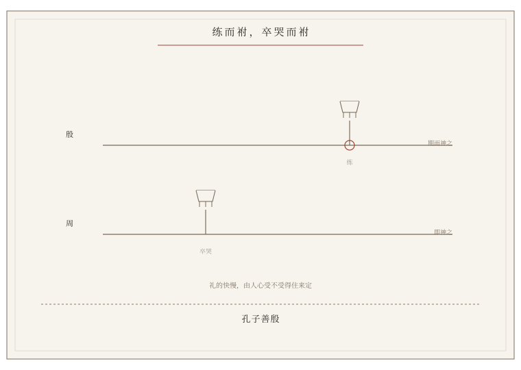

檀弓下 · 四·三十二 · 第 357 课
殷练而祔，周卒哭而祔，孔子善殷。
说什么事：殷人待至练祭（小祥，十三月）才把新死者祔于祖庙，周人卒哭之后即祔；孔子赞成殷人的做法。
落在哪一层：以「时」量礼，且以「人情」量时。论礼的快慢，最终由人心承不承受得住来定。
为何编在此位：上节正言祔与不变不空。此节掉过头来，问一句「祔得早好还是晚好」。
【经】殷練而祔，周卒哭而祔，孔子善殷。
【注】期而神之，人情。
【疏】底本此节无疏文。
练 小祥之祭，十三月而练。练者，练冠、练衣，以熟帛为饰。
祔 告祭于祖父之庙，使新死者有所依。
卒哭 止无时之哭。士三月而葬、是月卒哭，故去死未远。
善 称善，以为可。
期 一年。注「期而神之」，谓满一年乃以神事之。
神之 以神道事之，不复以生人待之。
殷人行练祭之后才祔庙，周人卒哭之后就祔庙；孔子称善殷人的做法。
此章只两句半：两个时间，一个评判。
评判的根据，注文一句话说完：「期而神之，人情。」
礼之快慢，不是由历法推出来的，是由人心受不受得住量出来的。
第一层 两个时间点 卒哭，士三月而葬、是月卒哭，去死不过数月；练，则在十三月。
祔是把新死者送进祖庙、从此以神事之。送进去的早晚，差着一整年。
第二层 孔子为什么善殷 郑注只四个字：「期而神之，人情。」
人死数月，生者的哀还在「他还在」的阶段。此时遽以神事之，则礼走得比心快。
礼比心快半步是引导，快一年就是硬拽。故孔子善殷：把「神之」挪到人心跟得上的地方。
第三层 善之而不从之 孔子善殷，而《论语》云「吾从周」。
善其意，从其实。这一层最见孔子的分寸：他评礼，评的是「这一节做得对不对」；他行，行的是「这一代该用什么」。
评与行分开，才有批评的余地。若一评即须改行，则无人敢评。
第四层 礼的快与慢 礼有两类节：一类催人（如三日而食、葬日而虞），一类待人（如练而祔）。
催，是因为不催则人陷而不出；待，是因为不待则礼到而人未到。
知礼者，不只知催，亦知待。 本节所记，正是「待」的一个范例。
第五层 今日之用：给悲伤一个自己的时间表 今人遇丧，多在职丧、事丧之间匆匆收束；哀未及半，生活已要求如常。
此节所示，不是要人拖一年，而是承认一条：哀有其自己的时差，礼须容这个时差。
若制度不许，则至少私下要给自己留出那一段——不明说，不作仪式，只是不许它被抹平。
与今日何干 凡遇生死、离散、大病、失业，人心皆有「期而神之」的需要：先当作还在，后承认不在。急于承认，往往不是刚强，是未及。
| 左 | 右 |
|---|---|
| 殷 | 练而祔 |
| 周 | 卒哭而祔 |
| 练 | 十三月，小祥 |
| 卒哭 | 士三月，去死未远 |
| 祔 | 告于祖庙 |
| 神之 | 以神道事之 |
| 善殷 | 取其待 |
| 从周 | 行其文 |
| 期 | 人情所及 |
画两条并列的横轴，一上一下，长短不一。上轴标「殷」，轴上一处偏右立一道短竖，竖顶置一小鼎；下轴标「周」，轴上偏左立一道短竖，竖顶置一小鼎。两轴的左端对齐，右端不齐。上轴竖线右方留一段空白，下轴竖线右方留一段较长的空白。不画人物，不画连线。赭色只用在上轴那道短竖上。
